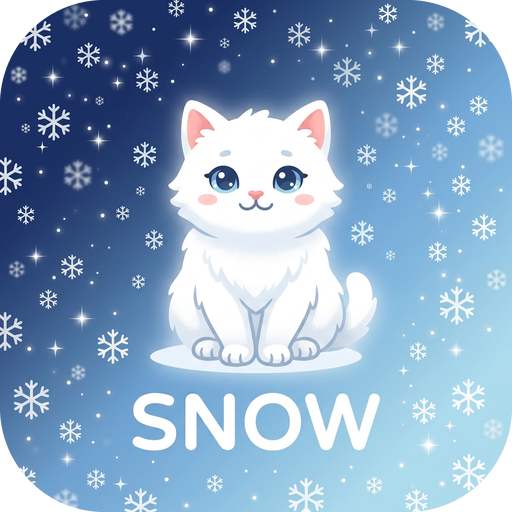

SNOW IPTV
Lojtar IPTV në shqip · Samsung TV · Android TV · telefon Android
Versioni 1.4.2 · Pasi instalohet, përditësohet vetë
Aplikacioni është bosh: ti fut abonimin tënd (Xtream Codes ose link M3U) që të ka dhënë ofruesi. Nuk vjen me kanale.
📺 Samsung TV – si instalohet (me telefon Android)
- Telefoni dhe televizori duhet të jenë në të njëjtin Wi-Fi.
- Në telefon shkarko SnowIPTV.wgt me butonin lart.
- Shkarko dhe instalo Apps2Samsung për Android (skedari .apk):
github.com/Apps2Samsung/Apps2Samsung/releases.
Nëse telefoni pyet, lejo instalimin nga ky burim.
- Gjej IP-në e telefonit: Cilësimet → Wi-Fi → rrjeti yt → IP address (p.sh. 192.168.1.20).
- Në TV: Home → Apps → zbrit poshtë fare → App Settings. Aty shtyp 1 2 3 4 5
(nëse telekomanda s'ka numra: butoni 123, ose telekomanda te aplikacioni SmartThings).
- Vendos Developer Mode: On, te Host PC IP shkruaj IP-në e telefonit → OK.
Pastaj rindiz TV-në: mbaj shtypur butonin e fikjes derisa të fiket e të ndizet vetë.
- Hap Apps2Samsung në telefon → zgjidh televizorin → Custom WGT → zgjidh SnowIPTV.wgt → Install.
Herën e parë hyr me llogarinë tënde Samsung.
- Gati! Snow IPTV del te Apps në televizor. Pas instalimit, Developer Mode mund ta fikësh.
💻 Pa Android? E njëjta gjë bëhet me Apps2Samsung në kompjuter (Windows ose Mac). Te Host PC IP vendoset IP-ja e kompjuterit.
🤖 Telefon Android – si instalohet
- Në telefon shtyp butonin e gjelbër Android TV / telefon lart → shkarkohet SnowIPTV.apk.
- Hape skedarin (te njoftimi i shkarkimit ose te Files → Downloads).
- Nëse telefoni thotë „Për sigurinë tënde, telefoni nuk lejon aplikacione nga ky burim“:
shtyp Cilësimet → aktivizo Lejo nga ky burim → kthehu mbrapa → Instalo.
- Nëse del Play Protect („aplikacion i panjohur“): Më shumë detaje → Instalo gjithsesi.
Del sepse aplikacioni nuk është në Play Store.
- Gati! Snow IPTV hapet horizontalisht, njësoj si në televizor.
👆 Me gisht: prek kanalin = kutia e vogël · prek përsëri = ekran i plotë · mbaj gishtin = ⭐
Në ekran të plotë: rrëshqit lart/poshtë = kanali tjetër · majtas = lista e shpejtë · prek = info · Mbrapa = menuja
Filmat: prek = info, prek përsëri = pauzë · rrëshqit majtas/djathtas = 10 sekonda
📺 Android TV / Google TV / TV Box – si instalohet
- Në TV hap Google Play dhe instalo aplikacionin falas Downloader (nga AFTVnews).
- Lejo instalimin: Cilësimet → Apps → Security & restrictions → Unknown sources → aktivizo Downloader.
Në Google TV: Cilësimet → System → About → shtyp 7 herë Android TV OS build (bëhesh „developer“),
pastaj Cilësimet → Apps → Security & restrictions → Unknown sources → Downloader.
- Hap Downloader dhe te kutia e adresës shkruaj:
aglien21.github.io/snow/SnowIPTV.apk → Go.
- Kur mbaron shkarkimi → Install → Open. Pastaj skedarin mund ta fshish (Delete) që të lirosh vend.
- Gati! Snow IPTV del te aplikacionet e televizorit.
🔄 Përditësimet në Android: ndryshimet e zakonshme vijnë vetë, si në Samsung. Kur del një APK e re,
aplikacioni të pyet „Ka një version të ri… Ta shkarkoj dhe ta instaloj tani?“. Shtyp Po, instaloje, pastaj Install.
Herën e parë Android kërkon leje: aktivizo Lejo nga ky burim për Snow IPTV dhe kthehu mbrapa. Listat dhe të preferuarat nuk humbin.
📺 Telekomanda (Samsung dhe Android TV)
OK: kanali luan në kutinë e vogël · OK përsëri: ekran i plotë · mbaj OK: ⭐ të preferuarat
Në ekran të plotë: ▲▼ / CH kanali tjetër · OK ose Back menuja · ◀ lista e shpejtë · ▶ formati i figurës
Filmat: OK pauzë · ◀ ▶ 10 sekonda · ▼ formati i figurës
Përdore vetëm me abonime ligjore. Ky aplikacion është vetëm lojtar dhe nuk ofron asnjë kanal.